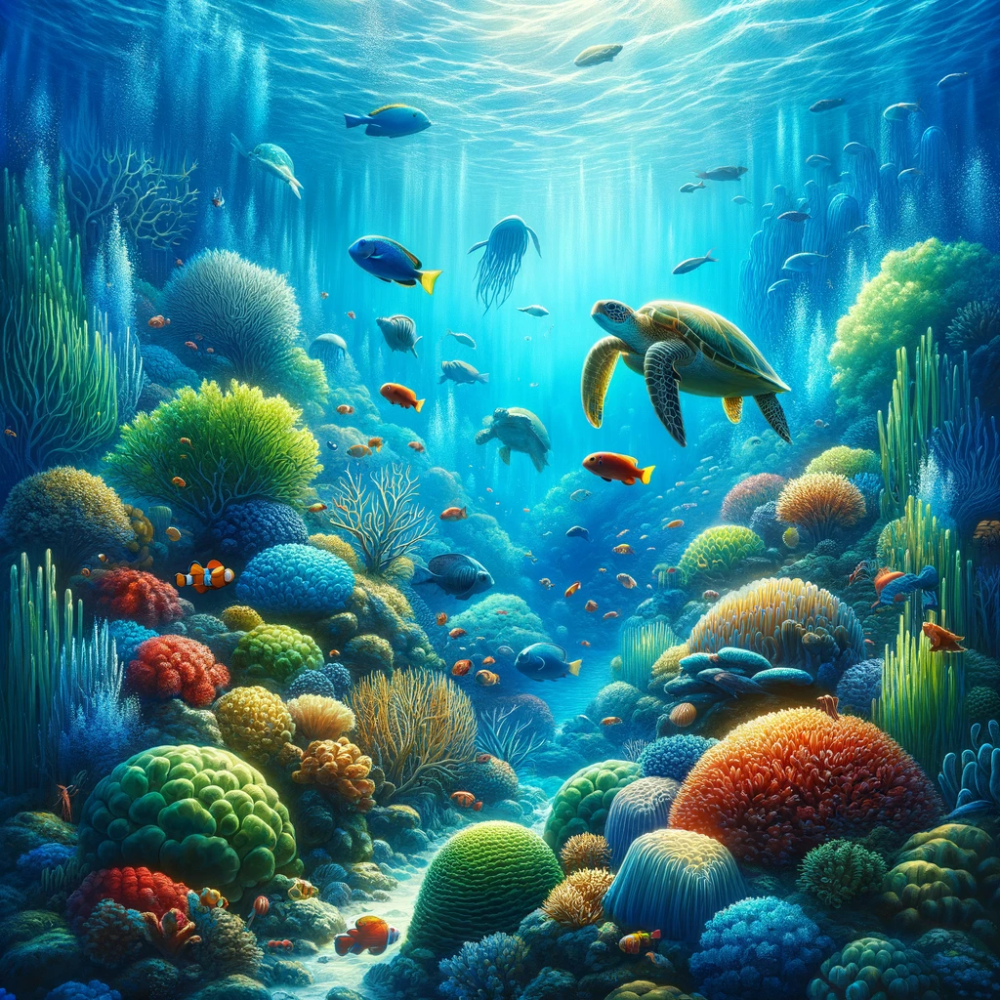

The Hidden World Beneath the Waves
Explore the unseen world beneath the ocean's surface. Join us on a journey through vibrant coral reefs, mysterious shipwrecks, and the vast, unexplored depths of our planet's oceans.
Marine Life: A Spectrum of Colors and Forms
Discover the diversity of life in the ocean, from the tiniest plankton to the largest whales. Learn about the fascinating adaptations these creatures have developed to thrive in their underwater environment.
Conservation Efforts: Protecting Our Oceans
Understand the challenges facing our oceans today, from pollution to overfishing, and learn what we can do to protect this vital resource for future generations.